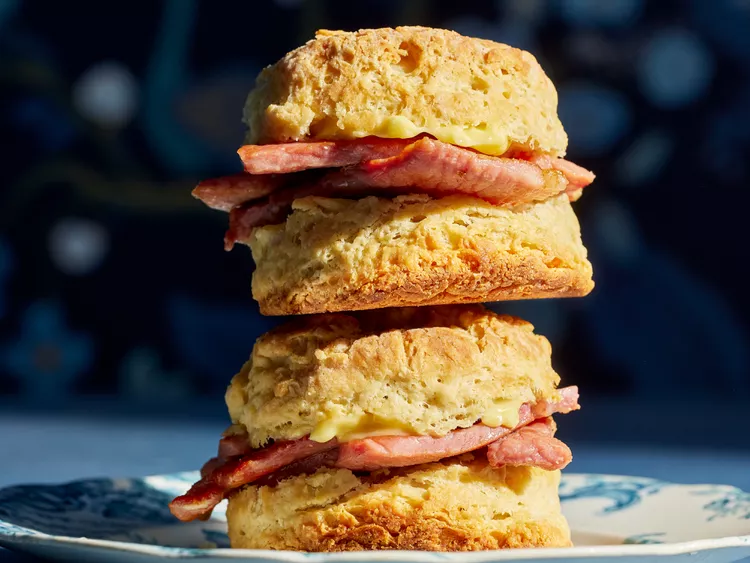

Country Ham and Biscuits

Country Ham and Biscuits is a timeless Southern dish, perfect for
breakfast, brunch, or as a savory party appetizer. This classic
combination features tender, flaky biscuits paired with the salty, smoky
goodness of country ham.
Ingredients
- ¼ cup shortening, plus more for greasing
- 3 cups flour, plus more for dusting
- 1 tablespoon sugar
- 1 tablespoon baking powder
- ½ teaspoon salt
- ½ teaspoon cream of tartar
- ½ cup cold butter, cut into 1/2-inch pieces
- 1 ¼ cups whole buttermilk
- 1 teaspoon bacon grease or shortening
- 3 slices country ham
- softened butter, for serving
Steps
-
Preheat oven to 425 degrees F (220 degrees C). Grease an 8-inch
cast-iron skillet with shortening.
-
In a large mixing bowl or the bowl of a food processor, sift together
flour, sugar, baking powder, salt, and cream of tartar. Mix or pulse a
few times to combine.
-
Cut butter and 1/4 cup shortening into flour mixture just until you get
a crumbly consistency. Add buttermilk to flour mixture. Gently stir
until just combined, being careful not to overmix.
-
Turn out dough onto a floured surface. With floured hands, pat dough to
approximately 2-inch thickness. Using a 2 1/2-inch biscuit cutter, cut
out 6 to 8 biscuits. Transfer to greased skillet. Bake until golden
brown, about 30 minutes. Remove biscuits from oven and let cool 5
minutes.
-
While biscuits are baking, cook ham: Add bacon grease to a cast-iron
skillet over medium heat. Add ham slices and fry until edges are brown,
a few minutes per side. Remove ham from skillet and place on a paper
towel lined plate to drain. Cut each slice in half.
-
To serve, split each biscuit in half, spread with softened butter, and
sandwich with a piece of ham.